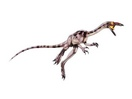

Coelophysis - Stworzony
celofyz do szybkiego biegu, miał lekkie, smukłe ciało oraz długie, szczupłe
nogi i ogon. Wąskie szczęki były uzbrojone ostre piłkowane zęby służące do atakowania
zdobyczy. Odnalezione w Nowym Meksyku szczątków ponad 1000 szkieletów sugeruje,
że dinozaury te żyły w stadach.
Herrerasaurus - Jeden z najwcześniejszych znanych dinozaurów, miał
smukłe ciało i długą, wąską głowę. Poruszał się na tylnych nogach, dwa razy dłuższych
od kończyn przednich. Miał mocne palce i wielkie, zakrzywione pazury, odpowiednie
do chwytania zdobyczy. Ruchome połączenie żuchwy pozwalały mu sprawnie i efektywnie
gryźć.
Eroraptor - Podobnie jak Herrerasaurus,reprezentuje najwcześniejsze
znane dinozaury. On też był mięsożercą, ale w porównaniu ze swym pobratymcem miał
mniejsze rozmiary i lżejszą budowę. Jego ostre, lekko piłkowane zęby z łatwością
cięły mięso, ale inaczej niż Herrerazaurus nie miał ruchomych połączeń żuchwy.
Saltopus - Jest jednym z

Saltopus najmniej poznanych dinozaurów. Ważył około 1 kg. Skamieniałe
świadectwa są dość skąpe. Z powodu małych rozmiarów ważnym składnikiem jego diety
były owady,a mógł być też padlinożercą
Szonizaur - Pośród gadów które wróciły do morza, najsłynniejsze są
prawdopodobnie ichtiozaury (rybojaszczury). Były one tak dobrze przystosowanej do
życia w morzu, ze nie musiały I spędzać ani chwili na lądzie. Niektóre wczesne gatunki,
takie jak szonizaury, były naprawdę olbrzymie -przypominały wieloryby. szonizaury
były największymi zwierzętami morskimi triasu. Jeden i gatunków, Shonisaurus
sikanniensis osiągał 21 m długości. Skamieniały szkielet tego ichtiozaura został
znaleziony na brzegu jednej z kanadyjskich rzek.
Notozaur - Notozaur był jednym z najwcześniejszych morskich gadów
drapieżnych. Jego palce były słabo skostniałe i otoczone fałdem skórnym tworzącym
płetwę, podobnie jak u foki. Miał także długą szyję i wydłu żone uzębione szczęki,
idealne do chwytania ryb. Długi ogon pomagał mu w pływaniu. Pomimo tego, że notozaury
spędzały większość czasu w wodzie, musiały wynurzać się żeby odetchnąć powietrzem.
Notozaur Istniały różne rodzaje notozaurów. Jednym z najmniejszych był około
60-centymetrowy lariozaur. Ceresiozaur i notozaur były większe i lepiej przystosowane
do życia w morzu. Miały długie szyje, które ułatwiały im łapanie ryb i kończyny
zakończone płetwami.
Eudimorfodon - Pod koniec triasu gady udoskonaliły umiejętność latania.
Aż do momentu pojawienia się pterozaurów, które posługiwały się skrzydłami, nie
istniało wiele gadów, które latałyby na długie dystanse. Eudimorfodon był jednym
z pierwszych pterozaurów Spiczaste przednie zęby eudimorfodona idealnie nadawały
się do chwytania ryb pływających w spokojnych lagunach. Mniejsze trójguzkowe tylne
zęby silnie trzymały wyrywającą się, śliską ofiarę aż do momentu doniesienia jej
do lądu, gdzie była zjadana.
Desmatozuch - Przed rozwojem dinozaurów największymi zwierzętami lądowymi
byli przodkowie dzisiejszych krokodyli. Niektóre z nich, jak np. desmatozuch, były
roślinożercami. Żywiły się paprociami i inną nisko rosnącą roślinnością. Rośliny
te rosły w okolicach pustynnych oaz.Grzbiet desmatozucha był pokryty rzędami płytek
kostnych, Z płytek szyjnych wyrastały mu długie wygięte na zewnątrz kolce, Chroniło
go to przed groźnymi drapieżnikami, np. przed mięsożernymi krokodylami żyjącymi
na lądzie.
Cynognat - W triasie jedna z grup gadów, terapsydy, była podobna do
dzisiejszych ssaków. Gady te były prawdopodobnie stałocieplne i miały podobną do
ssaków budowę. Możliwe, ze miały także sierść. Uważa się, ze grupa ta to przodkowie
prassaków. Cynognat był najbardziej ssakokształtny z całej grupy terapsydów. Badacze
Uważają że cynognat był pokryty sierścią, ponieważ jego kości szczęk mają małe wgłębienia,
gdzie mogły znajdować się wąsy, a tylko zwierzęta futerkowe mają wąsy. Czaszka cynognata
bardzo przypomina czaszkę ssaka. Tylko kształt szczęki wskazuje na to, że był to
gad.
Arizonazaur - Najgroźniejszymi drapieżcami w triasie były duże krokodyle
lądowe, których przedstawicielem był arizonazaur. Nie pełzał tak wolno, jak dzisiejsze
krokodyle, ale biegał szybko, jak pies, na prostych nogach. Krążył po terenach pustynnych
polując na roślinożerne gady, które zamieszkiwały wtedy oazy. Skrzydło mogło służyć
do utrzymywania ciepła. Działało na zasadzie ekranu pochłaniającego ciepło słoneczne
w chłodne poranki. Dzięki temu zwierzęta te były znacznie bardziej aktywne od swojej
wolno poruszającej się ofiary, co ułatwiało im polowania Pierwsze skamieniałości
arizonazaura znaleziono w 1947 roku, ale wtedy naukowcy uważali, ze były to kości
dinozaura. Dopiero w 2000 roku okazało się, ze pochodzą od krokodyla, a nie dinozaura.
Nowe zwierzę nazwano arizonazaurem.
Prokomsognatus - Jeden z pierwszych dotychczas odkrytych teropodów
i jeden z najstarszych dotychczas znanych dinozaurów. Dotychczas odkryto zaledwie
jeden szkielet, któremu daleko do kompletności. Żył prawdopodobnie na diecie złożonej
z owadów i małych jaszczurek.
We florze lądowej pospolite były rośliny nagonasienne, głównie szpilkowe oraz paprocie
nasienne. Powstają pierwsze benetyty, występowały, choć rzadko, miłorzęby i sagowce.
Równie pospolite były także rośliny zarodnikowe, w tym drzewiaste skrzypy, widłaki
i paprocie. Te ostatnie, wraz z widłakami, stanowią główną grupę roślin zielnych.
Pod koniec środkowego triasu zaczyna się stopniowy upadek widłaków i skrzypów, szczególnie
drzewiastych. Dominującą rolę we florze obejmują rośliny nagonasienne.W triasie
zaznacza się drugi okres prosperity płazów tarczogłowych, niektóre z nich osiągały
wówczas do 5 m długości i 0,5 tony. We wczesnym triasie powstały pierwsze płazy
bezogonowe. Olbrzymie zmiany zachodzą w świecie gadów. Pojawiają się pierwsze krokodyle
(w tym okresie wyłącznie lądowe), jaszczurki i żółwie. We wczesnym i środkowym triasie
główną grupą gadów były gady ssakokształtne, które jednak od triasu środkowego (drapieżcy)
i triasu późnego (roślinożercy) są wypierane przez tekodonty i zanikają wraz z końcem
triasu. W późnym triasie pojawiają się pierwsze dinozaury i szybko się różnicują
na trzy podstawowe grupy: dinozaury gadziomiedniczne (zauropody i teropody) oraz
dinozaury ptasiomiednicze. Pod koniec triasu pojawiają się też pierwsze ssaki wywodzące
się z gadów ssakokształtnych. Z późnego triasu pochodzą też pierwsze latające gady
– pterozaury.